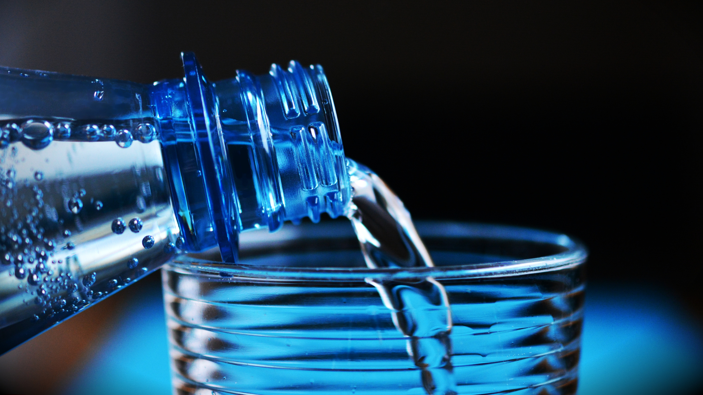
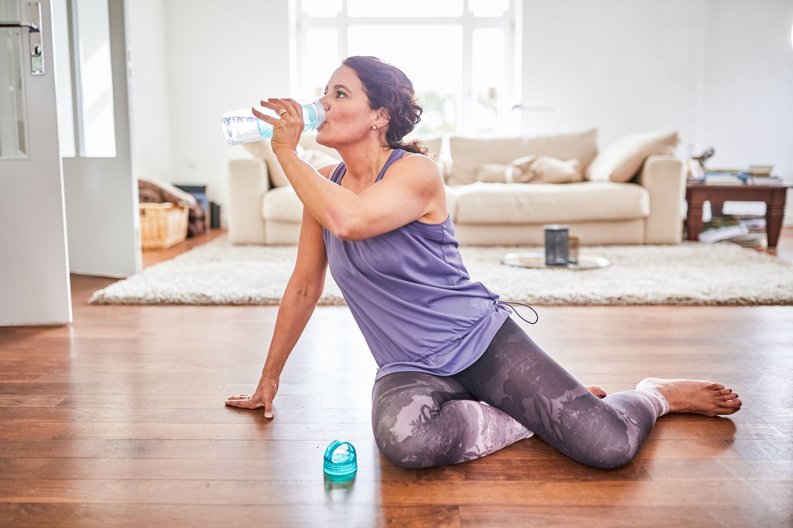

Bem vindo ao app beba agua, aqui você aprende a importância de beber agua e ainda calcula a quantidade de agua que deve tomar por dia, tudo baseado pelo seu peso.
Porque é importante Beber Agua?
Ajuda a prevenir pedras nos rins

A água é uma das melhores maneiras de reduzir o risco de pedras nos rins, de acordo com a National
Kidney Foundation9. Sem água suficiente, a produção de urina cai e isso pode permitir que os minerais
formadores de pedras se acumulem nos rins e na bexiga. Da mesma forma, obter líquido suficiente pode
ajudar a controlar o risco de infecções do trato urinário (ITU), pois a sub-hidratação pode promover o
crescimento de bactérias causadoras de infecção, de acordo com a UCLA Health. Duas razões saudáveis para
beber mais água!
Ajuda na concentração
"O cérebro funciona melhor quando está devidamente hidratado", diz Shanta Retelny. "O pensamento fica
mais claro, o foco melhora e os neurônios certamente irão agir de uma melhor forma". Um estudo sobre
mulheres publicado no The Journal of Nutrition3 explorou o estado de hidratação na função cerebral e
descobriu que uma perda de 1,4% do peso corporal em líquidos durante o exercício causava uma queda na
concentração.
Lubrifica as juntas

A água é um componente do líquido sinovial6, que lubrifica e amortece as articulações e a cartilagem
circundante para evitar o atrito doloroso dos ossos. Uma hidratação adequada é importante para garantir
que a membrana sinovial de cada articulação possa produzir esse líquido protetor, diz Shanta Retelny.